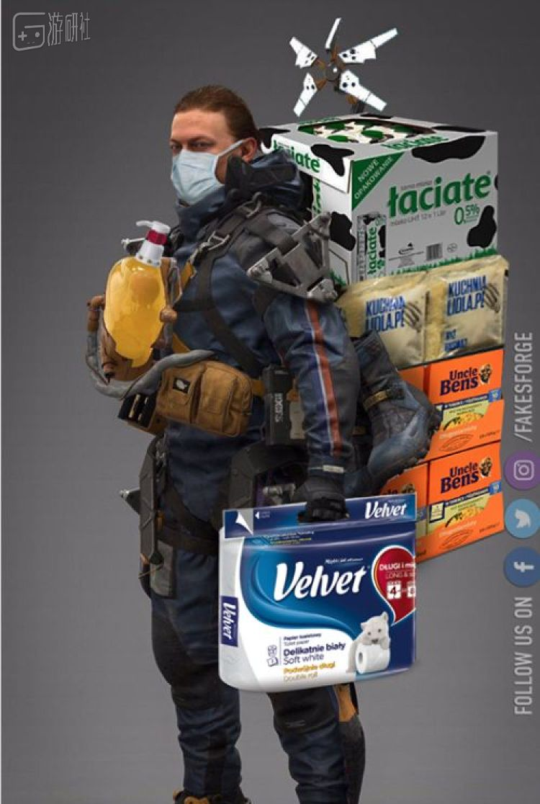

宅家一个月，游戏给我们和社会带来了什么？
原文链接 备份链接 主播，玩家，游戏企业，三种不同的角色，在疫情中做了同样的选择。当足不出户成为常态，游戏成了避风港时，这些或多或少遭遇过误解的人群，开始担起了更多的社会责任。 一 主播们大多没感到这期间的直播有什么不同，但作为身披影 …
岛哥哥什么时候骗过你？
发售后很长一段时间里，《死亡搁浅》都可以说是一款“不是零分就是满分”的游戏——电波对得上的玩家对其穷尽赞美之辞，对不上得则恨不得把它埋进坟堆，这么说并不夸张。
小岛秀夫自己也认识到了这一点。早先接受媒体采访的时候，他就曾经表示：“北美玩家对FPS非常热衷，《死亡搁浅》的游戏类型对他们来说可能难以理解，这是文化差异造成的结果。”
这话说得很婉转，但“北美玩家只懂打枪”的弦外之音同样明显。不论小岛秀夫本身有没有这个意思，总之当时是激怒了一大批北美玩家。
那时没人知道，尚未横空出世的新冠病毒即将席卷全球。
《死亡搁浅》发售于去年的11月8日，不久之后，新冠开始在中国肆虐。即使在那时，大洋彼岸的人们对病毒也没什么实感——所谓的疫情好像只是手机屏幕里的一段字或是一张图。
直到最近，感染人数开始攀升，政府下达隔离通知，餐馆酒吧暂停营业，大街上空空荡荡时，他们才后知后觉地发现，游戏中的剧情好像成了真。
在《死亡搁浅》中，没有实体的BT游荡在旷野，绝大部分幸存者都龟缩进城市，而玩家扮演的山姆，则需要通过送货将人类重新“连接”起来——这与当下现状似乎相差无几。人们各自隔离在家中，只有快递员依然在外奔波。
而“预言”到这一切的小岛秀夫，很快就成为了人们心中的先知、神。
《死亡搁浅》中所有晦涩的隐喻在此刻都显得直白，因为它不再是游戏中的故事，而是无数人正经历着的生活。对于这款慢热的游戏，小岛秀夫曾自信地表示，时间会证明一切。到如今，再坚持无神论的人似乎都不得不扪心自问一句：“小岛秀夫真的什么都算到了？”
当然，小岛秀夫是不是神仙我们不知道，我们只知道，在发售数月之后的这个节点，《死亡搁浅》再次激发了人们的创作欲望。
这次疫情中，口罩是绝对的主角，出于安全卫生和狂拽酷炫的双重考虑，有人设计出了希格斯同款黄金骷髅口罩。
不少人对遭遇疯抢，千金难买的厕纸念念不忘，这股执念也体现在他们做出来的图里。

《死亡搁浅》“预言成真”的情况下，通过对游戏的调侃，人们在紧张压抑的氛围中松了一口气。除此之外，已经触手可及的疫情也促使他们重新将审视的目光投向中国——那里有更多的“山姆”。
惊叹这幅情景与《死亡搁浅》描绘的世界何其相似的同时，跨越山海的“连接”也形成了。Rdddit上，有人为武汉快递员送货的照片配上了《死亡搁浅》的UI。
下面最高赞的评论回复道：“希望前方有发电机。”

原文链接 备份链接 主播，玩家，游戏企业，三种不同的角色，在疫情中做了同样的选择。当足不出户成为常态，游戏成了避风港时，这些或多或少遭遇过误解的人群，开始担起了更多的社会责任。 一 主播们大多没感到这期间的直播有什么不同，但作为身披影 …
原文链接 备份链接 . 意大利怎么了？ 汪玮Laetitia 03-02 00:27 投诉 阅读数：26311 . 确诊人数过千，死亡人数近30，意大利真的陷入危险了吗？ 越来越多的亲友问我，现在还好吗？ 为了免除一一回复的麻烦，亲 …
原文链接 备份链接 而另一个能帮助人们理解疫情的游戏已经玩不到了。 《魔兽世界》玩家想必基本都听说过这样一个故事： 2005年，拥有将近400万玩家的《魔兽世界》中爆发了一场瘟疫。因为暴雪设计上的疏漏，一种传染性极强的debuff在各 …
原文链接 备份链接 人们在家里找到了新乐趣。 就在前晚，Steam平台上的同时在线用户再次创下新高，达到了史无前例的2000万人（准确来讲，是20313457）。 最近一段日子，细心的朋友应该已经发现Steam平台上同时在线，以及正在 …
原文链接 备份链接 一些仍然在制作游戏的人，和仅开了个头的2020年。 _编辑_陈静2020年03月12日 15时58分 几周以来，我和同事们记录下了一些与疫情相关的玩家故事。他们是在武汉的普通人、老游戏编辑，他们是在其他城市的剧场演员、 …